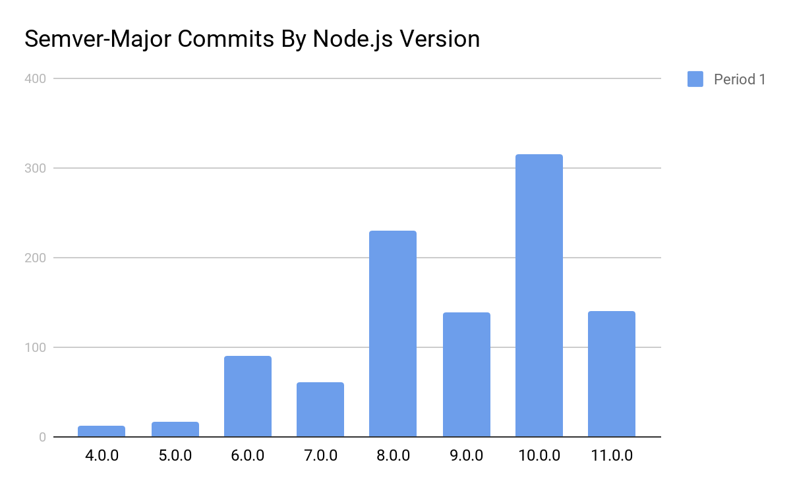

The State of Node.js Core
@jasnell
So far in 2018...
4,009+ Pull Requests...
2,069+ Issues...
~200+ New Contributors...
Every change tested on ~55
OS+Architecture combinations...
2,395+ unit and integration tests...
95.69% JavaScript coverage...
91.90% C/C++ coverage...
The Security Working Group...
- 119 ecosystem advisories (https://github.com/nodejs/security-wg/tree/master/vuln/npm)
- 7 advisories for Node.js core
8 Node.js 6.x Releases...
8 Node.js 8.x Releases...
16 Node.js 10.x Releases...
Node.js 11.0.0
October 23rd
Node.js 10.13.0
"Dubnium" LTS
October 30th
Mark your calendars:
Node.js 12.0.0
April 23rd 2019

What have we been working on?
HTTP/2
Fully Supported in
Node.js 10/11.
const http2 = require('http2')
const server = http2.createSecureServer({ key, cert })
server.on('stream', (stream) => {
stream.respond()
stream.end('Hello World!')
})
server.listen(443)
ALTSVC and
ORIGIN frames.
CONNECT Protocol extension
for WebSockets over HTTP/2
const http2 = require('http2')
const websocket = require('websocket-stream')
const WebSocket = require('ws')
const settings = { enableConnectProtocol: true }
const server = http2.createSecureServer({ settings, cert, key })
function createWebSocket(stream, headers) {
stream.setNoDelay = function() {} // fake it for now...
const ws = new WebSocket(null)
ws.setSocket(stream, headers, 100 * 1024 * 1024)
return websocket(ws)
}
server.on('stream', (stream, headers) => {
if (headers[':method'] === 'CONNECT') {
stream.respond({ 'sec-websocket-protocol': headers['sec-websocket-protocol'] })
const ws = createWebSocket(stream, headers)
ws.pipe(ws)
} else {
stream.respond()
stream.end('ok\n')
}
})
server.listen(443)
const origin = `http://localhost:${server.address().port}`
const client = http2.connect(origin)
client.on('remoteSettings', (settings) => {
if (!settings.enableConnectProtocol)
throw new Error('whoops! something went wrong!')
const req = client.request({
':method': 'CONNECT',
':protocol': 'websocket',
':path': '/chat',
'sec-websocket-protocol': 'chat',
'sec-websocket-version': 13,
origin
})
req.on('response', (headers) => {
const ws = createWebSocket(req, headers)
ws.setEncoding('utf8')
ws.on('data', console.log)
process.stdin.pipe(ws)
})
req.on('close', () => client.close())
})
Current Focus:
Make it Faster
Worker Threads
(Experimental)
const {
Worker, isMainThread, parentPort, workerData
} = require('worker_threads');
if (isMainThread) {
module.exports =
function somethingAsync(data) {
return new Promise((resolve, reject) => {
const worker = new Worker(__filename, {
workerData: data
});
worker.on('message', resolve);
worker.on('error', reject);
worker.on('exit', (code) => {
if (code !== 0)
reject(new Error(`Worker stopped with exit code ${code}`));
});
});
};
} else {
// This runs in a different thread!
function doSomething(data) { /** Something time consuming **/
return 'done'
}
parentPort.postMessage(doSomething(workerData));
}
}
Shared and
Exclusive Locks?
worker_threads.locks.request('my_resource', async (lock) => {
// The lock was granted.
}).then(() => {
// The lock is released here.
});
Deadlock Detection?
Inspector and
Diagnostics Support?
Should graduate before Node.js
12.0.0
N-API
Fully Supported
for all Native Addons
napi_value Init(napi_env env, napi_value exports) {
napi_status status;
napi_property_descriptor desc =
{"hello", NULL, Method, NULL, NULL, NULL, napi_default, NULL};
status = napi_define_properties(env, exports, 1, &desc);
if (status != napi_ok) return NULL;
return exports;
}
(There's a Workshop about this Tomorrow afternoon!)
Tracing & Diagnostics
Expanding support for Trace Events
// Enable Tracing at Runtime
const { createTracing } = require('trace_events');
const tracing = createTracing({
categories: ['node.perf']
});
tracing.enable();
perf_hooks.mark('A');
doSomething(() => {
perf_hooks.mark('B');
perf_hooks.measure('A to B', 'A', 'B');
});
tracing.disable();
// Access Tracing via the Inspector Protocol
const CDP = require('chrome-remote-interface');
(async function() {
const client = await CDP({port: 9229});
client.NodeTracing.tracingComplete(() => client.close());
client.on('event', (message) => console.log(message.data));
await client.NodeTracing.start({
traceConfig: {
recordMode: 'recordContinuously',
includedCategories: ['node'],
}
});
setTimeout(() => client.NodeTracing.stop(), 1000);
})()
Support tiers for Diagnostic tools:
- Tier 1: Must always work
- Tier 2: Must always work for LTS
- Tier 3: Will be tested in CI
- Tier 4: Not Blocking
There are no Tier 1 and 2 tools yet.
Tier 3 (tested in CI):
- V8 CPU Profiler
--prof and --prof-process flags- V8 CodeEventHandler API
- V8
--interpreted-frames-native-stack flag
- Linux perf
ES6 Modules
Modules really are coming.
https://github.com/nodejs/modules:
- ESM Loader
- Resolution Algorithms
- Loader Hooks
- ESM and CommonJS Interop
- Node.js and Browser compatibility
What else have we been doing?
Making Node.js better for embedders (like
Electron)
Added BigInt Support
process.hrtime.bigint()
fs.stat('myfile.txt', { bigint: true }, callback)
Expanded Promises Support
const { Resolver } = require('dns').promises;
const resolver = new Resolver();
resolver.setServers(['4.4.4.4']);
(async function() {
const addresses = await resolver.resolve4('example.org');
})();
New Crypto Key Generation API
const { generateKeyPair } = require('crypto');
generateKeyPair('rsa', {
modulusLength: 4096,
publicKeyEncoding: {
type: 'spki',
format: 'pem'
},
privateKeyEncoding: {
type: 'pkcs8',
format: 'pem',
cipher: 'aes-256-cbc',
passphrase: 'top secret'
}
}, (err, publicKey, privateKey) => {
// Handle errors and use the generated key pair.
});
Added multipleResolves Event.
process.on('multipleResolves', (type, promise, reason) => {
console.error(type, promise, reason);
setImmediate(() => process.exit(1));
});
return await new Promise((resolve, reject) => {
resolve('First call');
resolve('Swallowed resolve');
reject(new Error('Swallowed reject'));
});
Added recursive mkdir
fs.mkdir('/tmp/a/apple', { recursive: true }, (err) => {
if (err) throw err;
});
What else might be coming?
A new REPL?
https://github.com/nodejs/repl
New low-level streams?
https://github.com/fishrock123/bob
WHATWG Streams?
https://github.com/nodejs/admin/issues/262
QUIC support?
https://github.com/nodejs/node/issues/23064
A faster, maintainable http_parser?
https://github.com/nodejs/node/pull/24059
Module Loader Integrity Checks?
https://github.com/nodejs/node/pull/23834
Security Policies?
https://github.com/nodejs/node/pull/22112
Come Help Us
Code & Learn,
2pm Today, McCurdy 3
Node.js will be
10 years old next year.
Let's make every 2019
NodeConf a celebration.